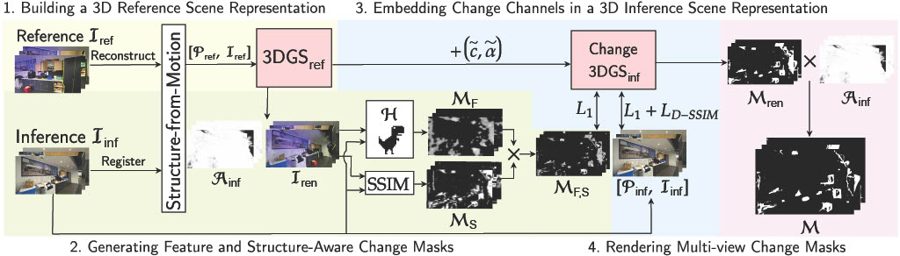

Autonomous agents often require accurate methods for detecting and localizing changes in their environment, particularly when observations are captured from unconstrained and inconsistent viewpoints. We propose a novel label-free, pose-agnostic change detection method that integrates information from multiple viewpoints to construct a change-aware 3D Gaussian Splatting (3DGS) representation of the scene. With as few as 5 images of the post-change scene, our approach can learn an additional change channel in a 3DGS and produce change masks that outperform single-view techniques. Our change-aware 3D scene representation additionally enables the generation of accurate change masks for unseen viewpoints. Experimental results demonstrate state-of-the-art performance in complex multi-object scenes, achieving a 1.7x and 1.6x improvement in Mean Intersection Over Union and F1 score respectively over other baselines. We also contribute a new real-world dataset to benchmark change detection in diverse challenging scenes in the presence of lighting variations.

An overview of our proposed approach for multi-view pose-agnostic change detection. We leverage a 3DGS representation of the pre-change (reference) scene to build feature and structure-aware change masks given images of the post-change (inference) scene. We embed this information as additional change channels into the representation, which can be used to render multi-view change masks.
@misc{galappaththige2024mv3dcd,
title={Multi-View Pose-Agnostic Change Localization with Zero Labels},
author={Chamuditha Jayanga Galappaththige and Jason Lai and Lloyd Windrim and Donald Dansereau and Niko Suenderhauf and Dimity Miller},
year={2024},
eprint={2412.03911},
archivePrefix={arXiv},
primaryClass={cs.CV},
url={https://arxiv.org/abs/2412.03911},
}This work was supported by the ARC Research Hub in Intelligent Robotic Systems for Real-Time Asset Management (IH210100030) and Abyss Solutions. C.J., N.S., and D.M. also acknowledge ongoing support from the QUT Centre for Robotics.